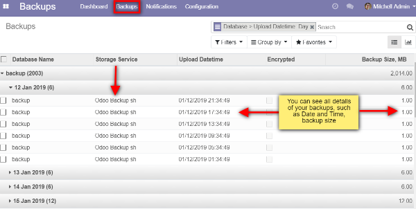
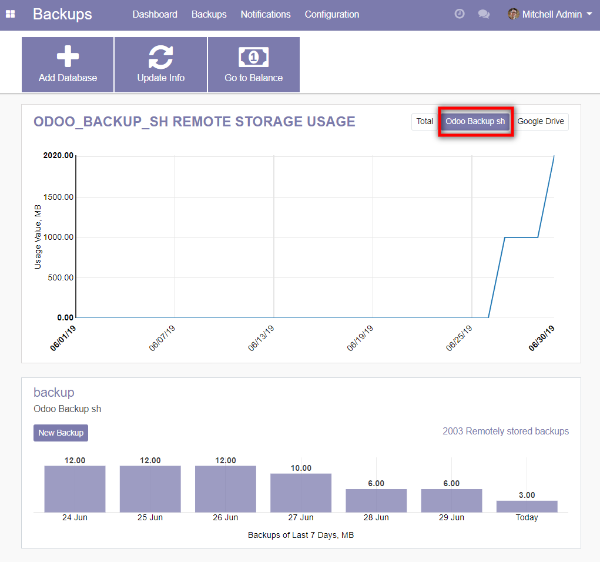
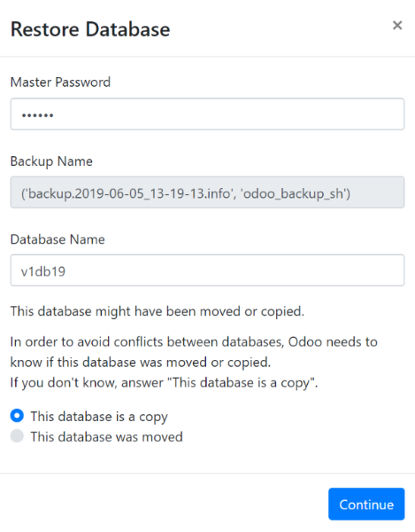

How it works
Backups
Open the menu [[ Backups ]] >> Dashboard

After redirection please login in Odoo.com
Set up a new configuration [[ Backups ]] >> Dashboard >> Add Database

- Choose the Database in the database field
- Encrypt your backup if you need, but do not forget the password
- Enter Interval Number, Interval Unit, New execution Date
- Select/unselect "Active" checkbox
- Click on Save button
- Go to [[ Backups ]] >> Dashboard
- Click on New Backup in the appeared configuration

You can see details of your backups in the Table format

You can see a Visual representation of your backups

Restore
- Please proceed to the Database Manager: /web/database/manager
- Click on Restore via Odoo-backup.sh button
- Choose the backup that you want to restore


- In the open Pop-up window enter Master Password, fill the Database Name
- In order to avoid conflicts between databases choose if this database was moved or copied
- Click on Continue button

Backup is restored in one click without any additional manipulations such as downloading-uploading process.